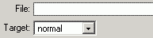

Sie können mit KTML 3 Links zu Dateien setzen (zB zum Download von .zip oder PDF-Dateien). Beachten Sie, dass Sie die Dateien zuerst auf den Server laden müssen, bevor Sie verlinkt werden können. Markieren Sie zuerst den Text oder Bereich, der mit der Datei verlinkt werden soll, und klicken Sie auf die Schaltfläche "Link". Im Eigenschafts Inspektor die der "Durchsuchen" Taste wird von KTML ein seperates Fenter angezeigt. Dieses Fenster ist sehr dem "Bild einfügen" Fenster ähnlich, weiters ist es in drei Teile aufgeteilt:
- Das linke Panel zeigt die Ordnerstruktur, folgende Optionen stehen
zur Auswahl: Ordner erstellen, Ordner löschen;

- Das rechte Panel zeigt den Inhalt des ausgewählten Ordners an.
Folgende Optionen stehen zur Auswahl: Datei hochladen,
Datei löschen.

- Das untere Panel zeigt Eigenschaften, die für verlinkte Dateien
verwendet werden können.

Der Dateimanager zeigt nur folgende (von KTML unterstütze) Formate an: bmp, gif, jpeg, jpg, png, pdf, doc, rtf, txt, mp3, mpg, mpeg, avi, wav, mov, qt, rm.
Das Zielfenster gibt an, wie die Datei geöffnet werden soll. Innerhalb der eigenen Seite, des Frames. Normalerweise öffnet man ein neues Fenster (zB bei PDF Dateien).